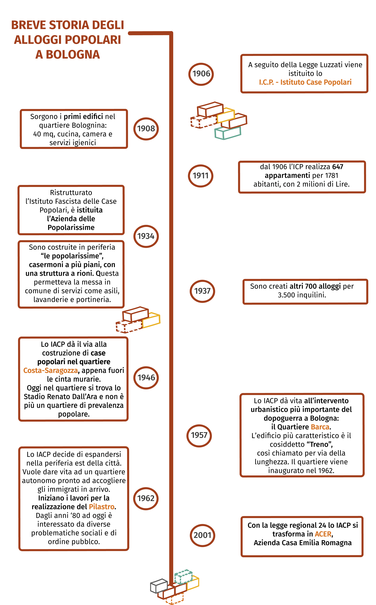
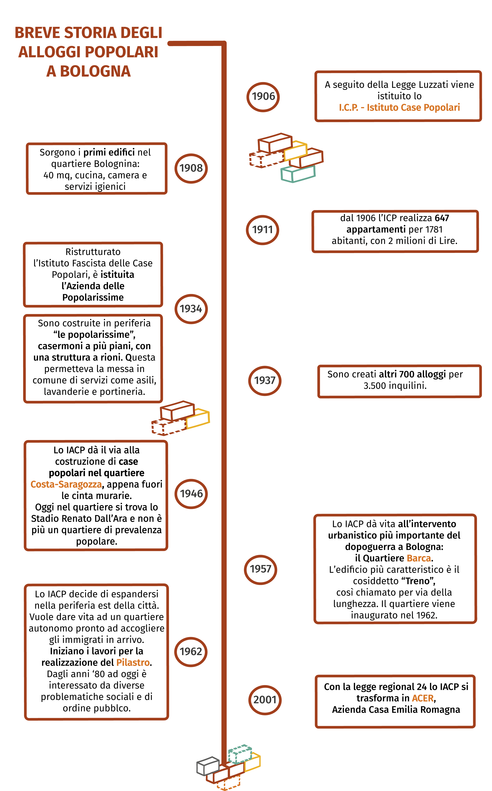
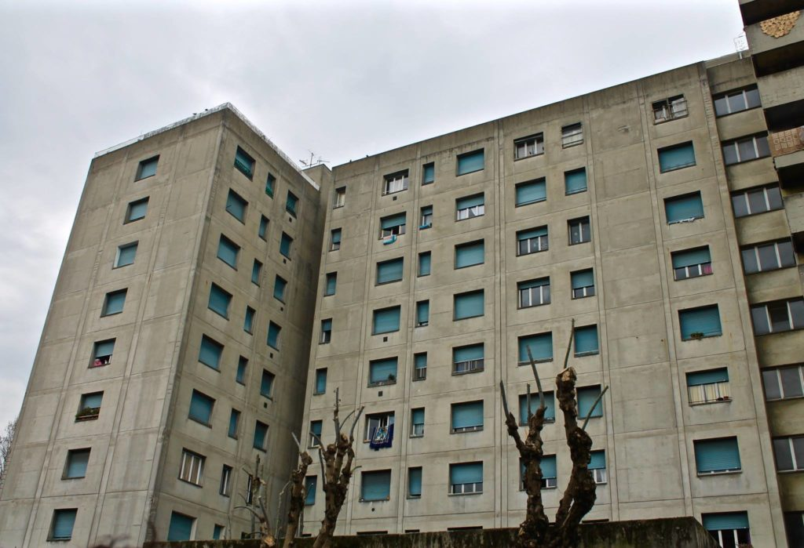

Storia degli alloggi popolari a Bologna


In seguito all'emanazione della Legge Regionale 24, l'ente che oggi a Bologna gestisce l'edilizia residenziale pubblica è ACER Bologna, Azienda Casa Emilia Romagna.
A seguito della sua costituzione nel 2001, il Comune di Bologna ha stipulato con esso una prima convenzione per la concessione della gestione del proprio patrimonio immobiliare, per poi rinnovarla nel luglio 2014.
Acer è un ente pubblico economico, dotato di personalità giuridica e di autonomia organizzativa, patrimoniale e contabile, di cui il Comune ha una quota societaria del 30,4%.
Acer non si occupa solo della gestione in senso stretto del patrimonio immobiliare comunale, ma ha anche diversi compiti accessori come provvedere alla manutenzione, in particolare per quel che riguarda l’edilizia residenziale pubblica (ERP), fornire servizi tecnici per quanto concerne la progettazione e l’attuazione di interventi edilizi o urbanistici, e soprattutto gestire quei servizi volti al soddisfacimento delle esigenze abitative delle famiglie.
Nel corso del nostro percorso di documentazione del mondo delle case popolari abbiamo avuto modo di sentire diverse polemiche in merito alle difficoltà che quotidianamente devono affrontare gli inquilini per comunicare con l’ente gestore. L’idea che emerge è quella di un ente che ha a che fare con persone spesso non in facili condizioni di vita, talvolta con problematiche socio-sanitarie, ma che finisce per trattare la questione in maniera forse troppo tecnica e distaccata; un ente che sa applicare al meglio i regolamenti e le normative in genere ma che forse, senza essere sul campo nei quartieri di San Donato, della Barca o di via della Beverara, non è in grado di farsi carico delle problematiche sociali che da molto tempo interessano queste realtà.

La stessa difficoltà comunicativa l'abbiamo trovata noi nel tentativo di avviare una collaborazione approfondita che ci permettesse di rappresentare dall'interno la realtà aziendale. Un tentativo estenuante durato più di sei mesi, fatto di scambi di mail, telefonate poco chiare e incontri in presenza dell'avvocato di Acer. Abbiamo riscontrato una serie di mancanze per quel che concerne gli obblighi inerenti la normativa sulla trasparenza e l'anticorruzione, alcune già riportate nel gennaio 2014 e sintetizzate in una griglia di valutazione approfondita, compilata a seguito di una delibera dell'ente nazionale per l'anticorruzione (ANAC). Perciò abbiamo voluto procedere con l'inoltro di due moduli di accesso civico, il primo dei quali da noi stesse ritirato su esplicita richiesta da parte di alcuni funzionari a causa di una compilazione non corretta, in previsione di una collaborazione più stretta da loro millantata. Non essendo questa avvenuta per ciò che concerne gli aspetti per noi più interessanti ed essendo riuscite ad ottenere solo un'intervista preparata e programmata con il Presidente Claudio Felicani, in data 9 agosto abbiamo provveduto ad un re-inoltro del modulo, di cui riportiamo la risposta tempestiva, firmata dal Direttore Generale.
Secondo quanto previsto dalla legge, e anche riportato nella sezione “Amministrazione trasparente” sul sito di Acer Bologna
“Acer Bologna, entro trenta giorni, procede alla pubblicazione nel sito del documento, dell’informazione o del dato richiesto e lo trasmette contestualmente al richiedente, ovvero comunica al medesimo l’avvenuta pubblicazione, indicando il collegamento ipertestuale a quanto richiesto. Se il documento, l’informazione o il dato richiesti risultano già pubblicati nel rispetto della normativa vigente, l’amministrazione indica al richiedente il relativo collegamento ipertestuale”.
Peccato che i 30 giorni siano scaduti il 9 settembre e nella risposta ufficiale Acer non fa altro che fornire uno scadenzario in cui prevede di pubblicare i diversi dati mancanti.
Speriamo che questo atteggiamento non sia lo specchio di un tentativo di rimandare il più possibile, consci del fatto che avremmo avuto delle scadenze. Preferiamo piuttosto pensare che, invece di occuparsi di noi, siano stati oberati di lavoro e abbiano perseguito quell’interesse pubblico a cui anche noi miriamo.
Fino a dicembre 2015, Acer Bologna agiva per mezzo di Acer Servizi Srl e Acer Manutenzioni Spa. Quest'ultima è stata messa in liquidazione in data 7 gennaio 2016, in quanto scaduta nel frattempo la convenzione col Comune, probabilmente stipulata con un termine definito per la durata della stessa, in modo da favorire il turnover delle imprese che avrebbero coordinato l'operato dell'Azienda Casa.
Una volta ottenute le visure camerali delle due imprese, abbiamo potuto notare che l'affidamento della manutenzione dell'edilizia residenziale pubblica è cambiato solo formalmente e non di fatto, passando ad Acer Pro.m.o.s. Spa. Infatti le quote di questa nuova società vedono partecipare per un 51 % Acer Servizi Srl e per un 49% Gesti.r.e. Srl... Una nuova e diversa società? Niente affatto!
È sì una società di nuova costituzione, nello specifico attiva dal 17.12.2015, ma al suo interno ci sono sei cooperative o consorzi, di cui 4 erano proprio quelle che andavano a costituire Acer Manutenzioni Spa. Probabilmente sarà casuale anche il fatto che la liquidazione della vecchia società e l’apertura della nuova avvengano in un lasso di tempo così vicino.
Il Presidente di Acer Bologna e l’allora Assessore alle politiche abitative hanno giustificato la questione sostenendo che il bando di gara, fra l’altro indetto a livello europeo, ha visto presentarsi un solo candidato: Gesti.r.e. Srl.
A tal proposito, già nel giugno 2015 il Consigliere Regionale dell'Emilia-Romagna per il Partito Democratico, Giuseppe Paruolo, aveva espresso i suoi dubbi alla Giunta in merito al già dichiarato intento di Acer Bologna di costituire una nuova società partecipata che andasse a sostituire Acer Manutenzioni Spa, sostenendo che la creazione di una nuova società di scopo violasse le modifiche della legge regionale 24 del 2013.
Le difficoltà degli inquilini degli alloggi popolari non sono solo di comunicazione con l’ente gestore, ma talvolta assumono caratteri ben più gravi, portando gli stessi a intentare cause legali infinite contro Acer.
ad altre famiglie dal 1996 perché, a suo dire, non gli è stato concesso di usufruire di tutti quei diritti di cui, in quanto profugo, avrebbe dovuto godere per il riscatto della casa assegnata a lui e alla sua famiglia in maniera legittima. Infatti a tutelare i cittadini italiani profughi da Libia, Tunisia, Eritrea ed Etiopia interviene la Legge 26 dicembre 1981 n° 762, riguardo cui Giuseppe e i suoi genitori non erano stati informati di tutti i risvolti conseguenti.
Grazie a lui siamo riuscite a ridimensionare anche quel mito diffuso secondo cui, una volta ottenuta la casa popolare, non si hanno più problemi a mantenersi e ad arrivare a fine mese. Si, perché Giuseppe è ora purtroppo praticamente senza reddito e non riesce più a permettersi nemmeno l’affitto sociale e le spese di luce e gas per il mantenimento dell’appartamento che gli è spettato dopo la morte dei genitori. Si è trovato solo e moroso incolpevole, dentro una casa popolare.